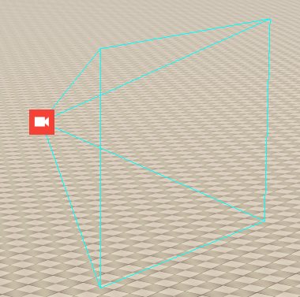

Camera
A camera object is used to define custom views of your level. They can be triggered via the Flow Graph and Track View, and are heavily used within animated sequences.

Parameters | Description |
|---|---|
FOV | The field of view of the camera. |
FarZ | The max cut off point of the camera. |
NearZ | The cut off point closest to the camera. |
Amplitude A | Vec3, the strength of the effect on each axis. |
Amplitude A Mult. | Multiplier for the Amplitude. |
Frequency A | Vec3, how off the effect will play in each axis. |
Frequency A Mult. | Multiplier for the Frequency. |
Noise A Amplitude Mult. | Add some noise to the amplitude value. |
Noise A Frequency Mult. | Add some noise to the frequency value. |
Time Offset A | Asome time offset. |
Amplitude B | Vec3, the strength of the effect on each axis. |
Amplitude B Mult. | Multiplier for the Amplitude. |
Frequency B | Vec3, how off the effect will play in each axis. |
Frequency B Mult. | Multiplier for the Frequency. |
Noise B Amp. Mult. | Add some noise to the amplitude value. |
Noise B Freq. Mult. | Add some noise to the frequency value. |
Time Offset B | A some time offset. |
Random Seed | Apply some random variation to the noise. |